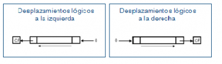
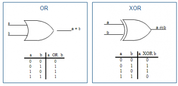
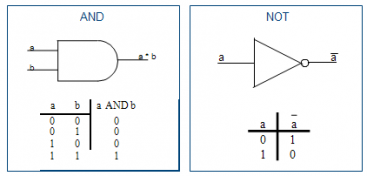

UNIDADES ARITMÉTICA LÓGICA
Unidad Aritmético Lógica : La Unidad aritmético-lógica (ALU por sus siglas en inglés: Arithmetic Logic Unit) es un contador digital capaz de realizar las operaciones aritméticas y lógicas entre los datos de un circuito; suma, resta, multiplica y divide, así como establece comparaciones lógicas a través de los condicionales lógicos “si”, “no”, y, “o”. Desde los circuitos más simples, como relojes y calculadoras, hasta complejos circuitos, como los microchips actuales, todos incluyen al menos una Unidad aritmético-lógica, que varía su poder y complejidad según su finalidad.
Las computadoras más modernas, que incluyen procesadores de múltiples núcleos, incorporan a su vez múltiples dispositivos ALU, con una diagramación compleja y potente. Pero yendo a los orígenes, fue el matemático húngaro-estadounidense John von Neumann quien, en el año 1945, a través de un informe fundacional sobre el desarrollo del Computador Automático Variable Discreto Electrónico (EDVAC, por sus siglas en inglés), propuso la idea de la ALU, explicando que es un requisito indispensable para cualquier computadora el poder efectuar operaciones matemáticas básicas. En la actualidad, las operaciones que realiza una ALU entre los distintos datos, que deben ser iguales a los que emplea el circuito digital, es la representación del número binario de complemento a dos. Sin embargo no siempre fue así: en sus comienzos, las distintas computadoras utilizaron una amplia gama de sistemas numéricos, como el Complemento a uno, o el sistema decimal, adecuando el diseño de las ALU a cada sistema. A través del tiempo, el Complemento a dos resultó ser el preferido por la industria, al ser el de mayor simplicidad para la diagramación del circuito de la ALU. Lo que definimos como CPU (Central Process Unit) o Unidad Central de Proceso, está estructurado por tres unidades operativamente diferentes:
1. La ALU o unidad aritmético lógica.
2. La UC o unidad de control.
3. Los registros internos
Operaciones en la ALU
Con respecto a cualquier microprocesador, las instrucciones involucran operaciones sobre un operando, o entre dos de ellos, estando uno de los mismos almacenado en el registro acumulador que es el registro de trabajo de cualquier ALU, por lo que en algunos casos suele denominarse registro W. El tipo de operaciones que puede realizar una ALU, pueden resumirse así:
2. Resta aritmética (complemento a 2)
3. operaciones lógicas
producto y suma lógica Comparación Complementación enmascaramiento
4. Desplazamiento o rotación
5. No operar (transferencia)
Algunas instrucciones están referidas al contenido del registro acumulador en su totalidad, y otras respecto a algunos bits del mismo, correspondiente a una palabra de datos que se desea modificar.
Tipos de ALU
– Coma fija
– Coma flotante
Partes
– Operadores: aritméticos, lógicos y de desplazamiento
– Registros para almacenar datos temporales
– Registro de estado: conjunto de flags que indican situaciones ocurridas al operar
– Registro contador de programa
– Registro de direcciones de interrupción
Clasificación de los operadores
Ámbito de aplicación: General Especializado
Realización: Combinaciona Secuencial
Número de operandos: Monádico Diádico
Paralelismo: Serie o de dígito Paralelo o de vector
Operación: De desplazamiento Lógico Aritmético
Tecnología empleada: MOS Bipolar
Desplazamientos lógicos
– Independientemente del sistema de representación de los operandos se introducen ceros por la derecha o por la izquierda según se trate de un desplazamiento a la izquierda o a la derecha, respectivamente.
– El bit o los bits que salen suelen copiarse en el indicador de acarreo (el último que ha salido es el que queda).
Desplazamientos lógicos a la izquierda Desplazamientos lógicos a la derecha

Desplazamientos Lógicos
Las operaciones lógicas realizan la operación sobre cada uno de los bits del operando o de los operandos

Desplazamientos Aritméticos

Desplazamientos Aritméticos
Desplazamientos aritméticos
– Equivalen a multiplicaciones y divisiones por dos, según sean hacia la izquierda o a la derecha, respectivamente.
– El sistema de representación de los operandos debe tenerse en cuenta si los operandos tienen signo.
– El bit o los bits que salen suelen copiarse en el indicador de acarreo (el último que ha salido es el que queda).